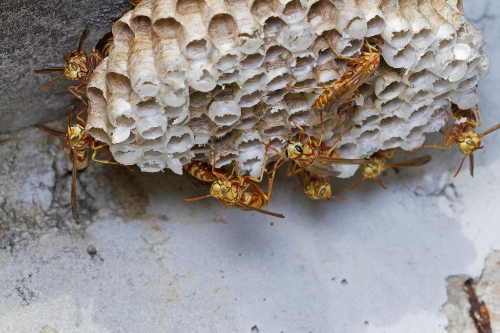
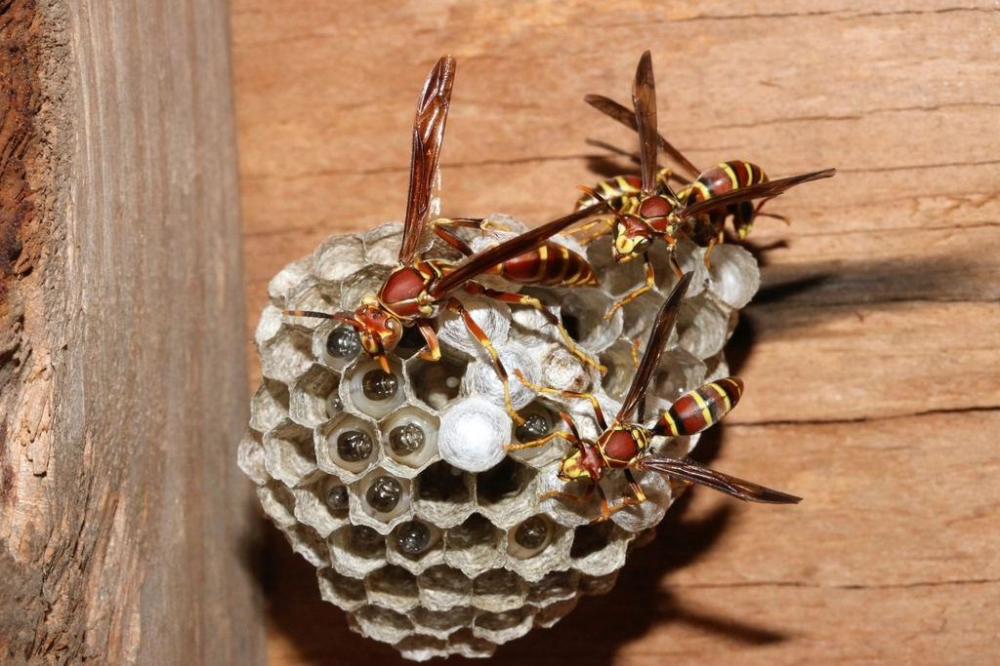
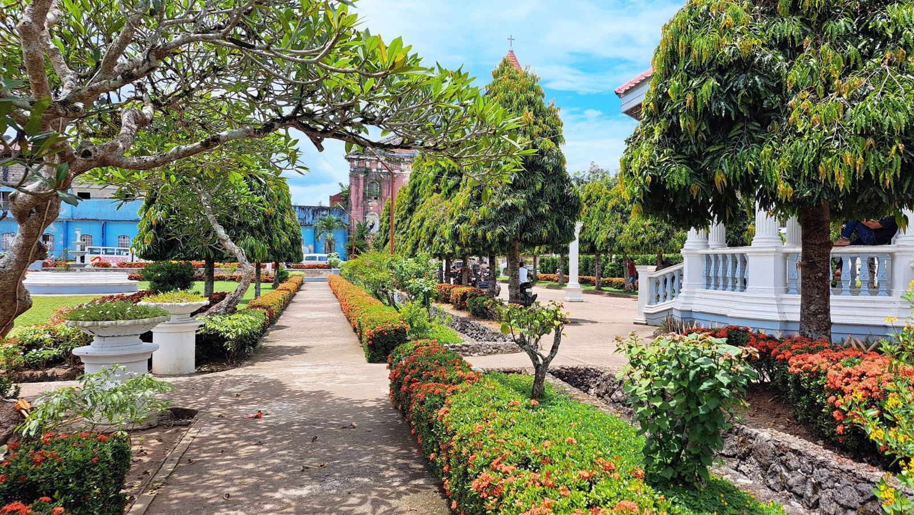
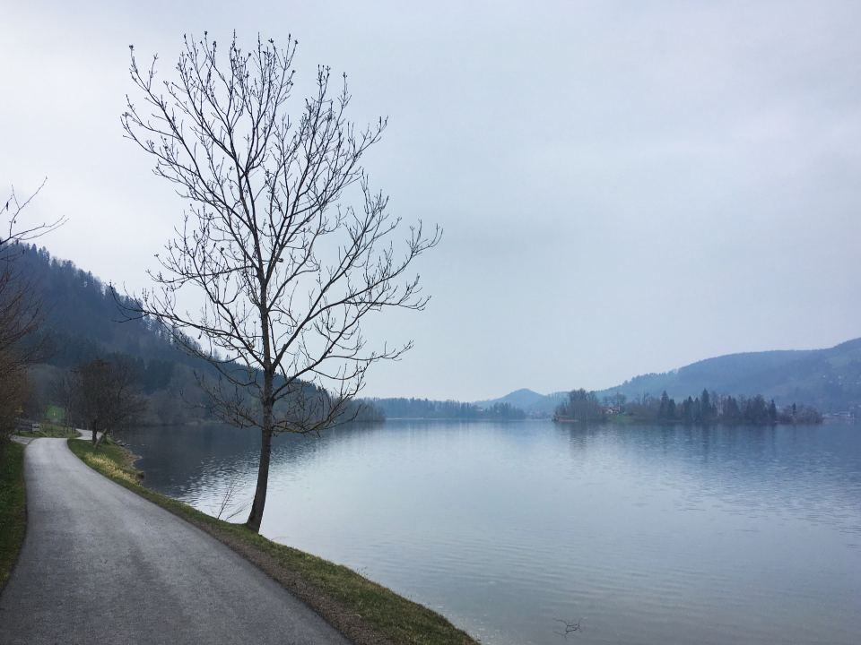
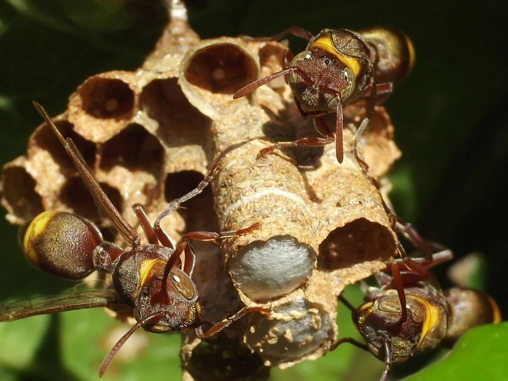
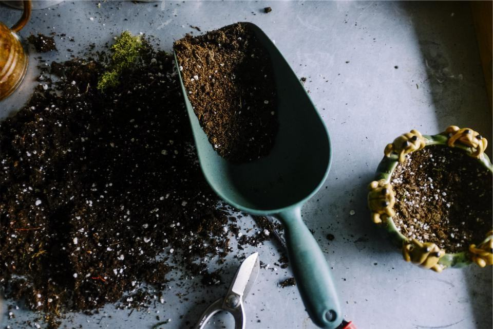

Tjänster
I dag är vi fyra anställda året runt och nio säsongsanställda – mest lärare och studenter – från juni till september. Vi tar omkring 2 600 getingbon per säsong, flyttar runt 180 humlebon och fångar 40–60 bisvärmar som går vidare till biodlare i föreningen på Öland.
Är det getingar, humlor eller bin?

Getingbon på hus och mark
Ett getingbo i augusti kan rymma 5 000 arbetare. Vi tar bort det i gryningen eller sent på kvällen när alla är hemma, med en specialdammsugare som tömmer boet utan att getingarna sprids.
Kommer getingarna tillbaka inom 14 dagar gör vi ett nytt besök utan kostnad.

Bisvärmar
En bisvärm som hänger i ett äppelträd är inte farlig och ska inte besprutas. Vi kommer samma dag, skakar ner svärmen i en kupa och kör den till en biodlare.
Svärmfångst är gratis – vi får bina, du får tillbaka trädgården.

Humlor
Humlor är fredliga och viktiga pollinerare, men ibland bygger de i en altantrappa eller en förskolas sandlåda. Då flyttar vi hela boet i en låda till en plats där det får vara i fred.
Vi har en egen ängsmark på 2 hektar utanför Färjestaden för humlor som inte kan stanna.

Turism och besöksnäring
På Öland blir getingarna ett affärsproblem i augusti. Campingplatser, caféer och kiosker får en fast veckorunda där vi tar bon och vittjar fällor.
Säsongsavtalet gäller från 1 juni till 15 september.
Bild, besök och garanti
- 1
Skicka bild
Ta en bild på insekterna eller boet. Vi svarar inom en timme om det är getingar, humlor eller bin.
- 2

Tid samma dag
Getingbon och svärmar tar vi oftast samma dag under säsongen.
- 3

Bort eller flytt
Getingarna sugs ut och ingången pudras. Bin och humlor flyttas levande.
- 4

14 dagars garanti
Syns getingarna igen vid samma ingång kommer vi tillbaka utan kostnad.
Behöriga och biodlare
- Behörighet för getingmedelAlla tekniker har Kemikalieinspektionens behörighet för de pulver som används i getingbon.
- BiodlarutbildningEllinor och två kollegor har gått Biodlarnas grundkurs och är medlemmar i den lokala biodlarföreningen.
- LiftkortTeknikerna har utbildning för mobila arbetsplattformar för bon i torn och höga gavlar.
- AllergiberedskapAlla bilar har adrenalinpenna och teknikerna har gått kurs i första hjälpen vid stick.